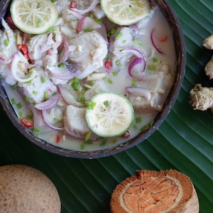

Local Food
The foods from my culture are some of the most meaningful foods to me. They are not just meals, but something that connects me to my family, my background, and my identity. These foods are often shared during gatherings, family events, or special occasions.

This is Ika Mata, it is one of my favourite foods from the Cook Islands. You can also find more foods from the Cook Islands at this website CookIslandTravel.com